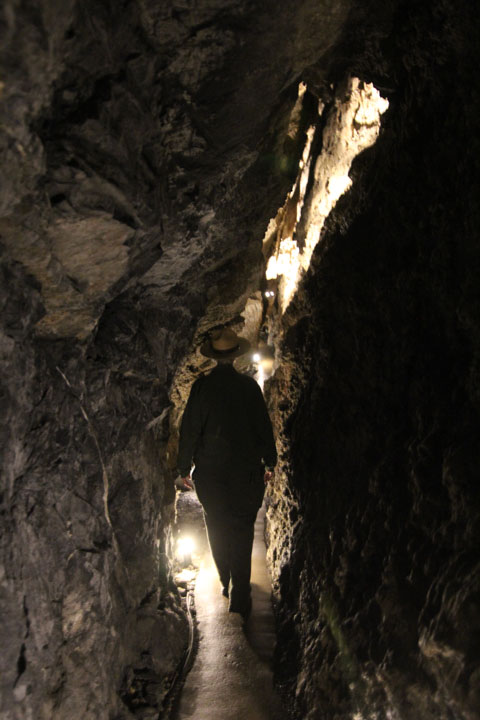
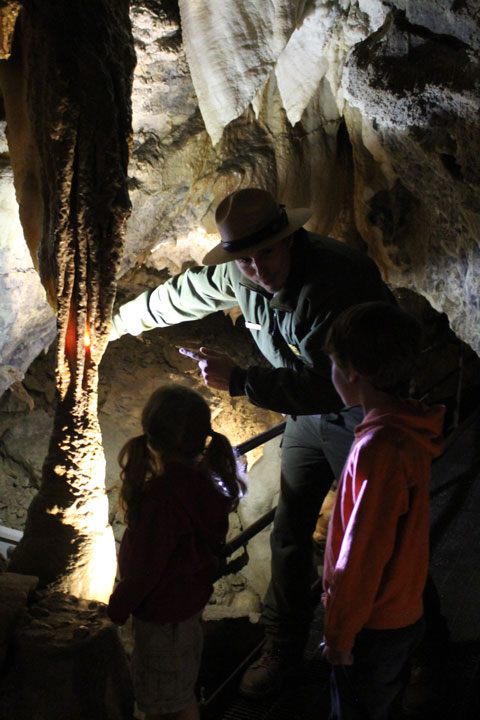
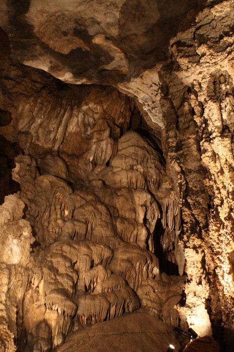

Middle Cave
The cave system is built on fault fractures. Water flowed through the fissures dissolving rock as it went. This means some of the passages can feel narrow as you travel through these great cracks in the mountain. Look closely and you can find where the two sides of the rock come together.

Middle Cave
Early discoverers of Middle Cave had to drop down ropes, carefully scramble around beautiful cave formations, and even wade through freezing cold water to explore the passages of the cave. What kind of explorer are you?

Middle Cave
Look for flowstone, a frozen waterfall of rock found in the caves. Water flows into the cave in sheets leaving microscopic layers that stack up over thousands of years to create this magnificent flowstone wall.

❮
❯